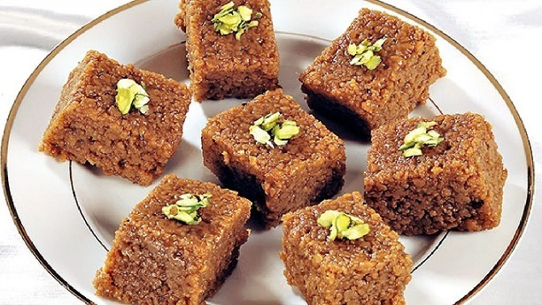

Sohan Halwah Recipe

Ingredients:
- 2 cups flour
- 1 cup sugar
- 1 cup water
- 1 cup vegetable oil
- 1 cup rosewater
- 1 tsp cardamom powder
- 1 cup pistachios, chopped
Directions:
- Preheat oven to 350°F (180°C).
- Mix the flour and vegetable oil together in a bowl until well combined.
- Add the cardamom powder and chopped pistachios to the bowl and mix well.
- Place the mixture in a baking dish and bake for 30 minutes or until golden brown.
- While the sohan halwah is baking, prepare the syrup by combining the sugar, water, and rosewater in a saucepan over medium heat.
- Bring the syrup to a boil, stirring constantly until the sugar has dissolved.
- Reduce the heat to low and let the syrup simmer for 10 minutes until it thickens slightly.
- When the sohan halwah is done, remove it from the oven and pour the hot syrup over it.
- Let the sohan halwah cool and absorb the syrup before serving.